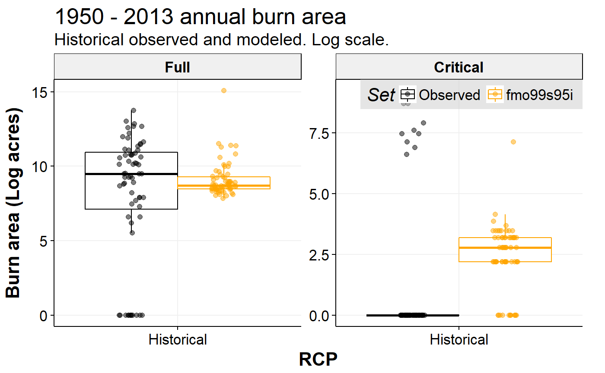

Create plots for each of the data sets included in the package using one convenient wrapper function.
jfsp_plot(type = NULL, years = NULL, by_rcp = TRUE, by_tx = TRUE, col = NULL, file = NULL, base_size = 14, text_size = 18, pt_size = 2, ...)
| type | character, the type of plot to make, based on a particular package data set. See details. |
|---|---|
| years | numeric, vector of consecutive years. The maximum range is |
| by_rcp | logical, condition on RCP, defaults to |
| by_tx | logical, if |
| col | optional vector of colors to override the defaults built into |
| file | character, if provided, the plot is saved to disk. Otherwise, it is plotted in the R session graphics device. See details. |
| base_size | base size passed to theme. See details. |
| text_size | text size passed to theme. |
| pt_size | override default size for points in applicable plot types. |
| ... | additional arguments. See details. |
a ggplot object. If saving a png file to disk, nothing is returned.
Data sets included in the package can be explicitly plotted however desired,
but for convenience the package offers this wrapper function that creates stock plots associated with package data sets.
A plot type calls the applicable data set for that plot internally.
Stock plots use standardized formatting similar to the main snapplot package plot theme.
Available stock plots include:
ba_sdn-year moving average FMO zone burn area annual time series. Optional arguments: continuous, alaska = TRUE, breaks, fmo, n, obs = TRUE.
ba_boxFMO zone burn area aggregate period box plots. Optional arguments: alaska = TRUE, log = TRUE, fmo.
cbaFMO zone cumulative burn area annual time series. Optional arguments: alaska = TRUE, breaks, fmo.
costAlaska fire management annual costs time series. Optional arguments: breaks, obs = TRUE.
cost_decAlaska fire management decadal projected costs time series. Optional arguments: obs = TRUE
cdratioAlaska coniferous:deciduous ratios annual time series. Optional arguments: breaks.
cdbaAlaska coniferous and deciduous annual burn area time series. Optional arguments: breaks.
pfireProbability of fire near Fairbanks as a function of radial buffer distance. The years argument is ignored for this plot.
fs_boxAlaska fire size distribution decadal box plots. Optional arguments: log.
Additional arguments can be provided. General arguments include family (font family).
Arguments related to specific plot types are ignored when not applicable.
alaska = TRUE performs statewide aggregation over all FMO zones. log = TRUE applies a log scale transformation.
continuous = TRUE avoids a break in the time series where historical meets RCPs by triplicating the historical data and merging with each RCP series, only for ba_sd.
n is an integer for the number of years in the moving average window for ba_sd. Defaults to 30.
breaks is a vector of breaks applicable to time series plots with years along the x-axis.
fmo allows for subsetting the FMO zones available in the fmoba data set; not applicable when alaska = TRUE.
If not provided, it defaults to fmo = c("Full", "Critical") since these are the most important zones for work encapsulated by the package.
obs = TRUE will overlay a representation of historical observed data on a plot, such as a horizontal line showing the historical average. This applies to ba_sd, cost and cost_dec.
If the showtext is loaded, it may be necessary to significantly increase base_size and/or text_size for the 300 dpi image saved when file is not NULL.
Google fonts and even base R fonts may shrink significantly relative to the plot under these circumstances with showtext in effect (e.g., after calling showtext_auto).
If this happens, try 20 and 60 instead of 14 and 18, respectively.
This will be done for you automatically if you elect to name your font with the special name, "gfont", and pass it as family = "gfont".
When saving a plot directly from jfsp_plot by passing a filename to file,
jfsp_plot will internally adjust plot formatting settings in order to save a 300 dpi resolution image to disk while maintaining consistent and appropriate sizing of text and other plot elements.
jfsp_plot("ba_box", 1950:2013, log = TRUE)